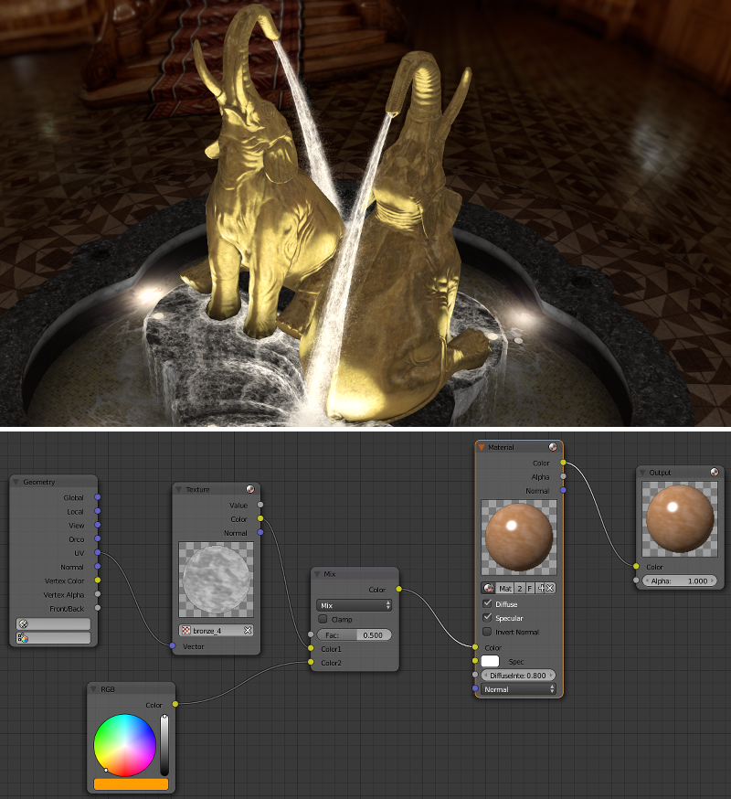
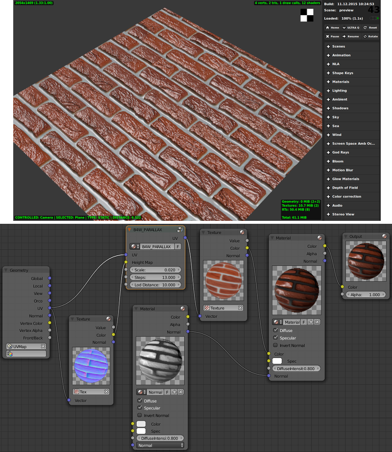
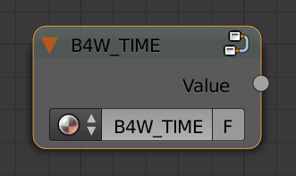

Нодовые материалы¶
Содержание
- Нодовые материалы
- Стандартные ноды
- Дополнительные ноды
- Clamp (B4W_CLAMP)
- Glow Output (B4W_GLOW_OUTPUT)
- Levels of Quality (B4W_LEVELS_OF_QUALITY)
- Parallax (B4W_PARALLAX)
- Reflect (B4W_REFLECT)
- Refraction (B4W_REFRACTION)
- Replace (B4W_REPLACE)
- Smoothstep (B4W_SMOOTHSTEP)
- Time (B4W_TIME)
- Translucency (B4W_TRANSLUCENCY)
- Vector View (B4W_VECTOR_VIEW)
- Linear to SRGB и SRGB to Linear (Deprecated)
- Ноды Сycles
- Ограничения
Шейдерные ноды (Shader Nodes) существенно расширяют возможности стандартных материалов Blender, позволяя представить освещение как серию базовых преобразований.
{kind=link}
Стандартные ноды¶
Blend4Web поддерживает все стандартные ноды Blender, однако некоторые из них работают недостаточно быстро и не рекомендуются к использованию в приложениях реального времени. Не рекомендуется создавать сложные материалы, особенно использующие большое количество нод Geometry и Texture.
Движок также частично поддерживает некоторые ноды Cycles. Более подробно этот вопрос рассмотрен в соответствующей главе.
Производительность и степень поддержки движком стандартных нод описаны в таблице.
Название ноды |
Функция |
Поддержка |
Производительность |
|---|---|---|---|
| Camera Data | Используется для получения информации от активной камеры |
Поддерживается |
Средняя |
| ColorRamp | Используется для генерации градиента |
Типы интерполяции |
Средняя |
| Combine HSV | Собирает цвет из заданных значений тона, насыщенности и яркости |
Поддерживается |
Средняя |
| Combine RGB | Собирает цвет из заданных значений красного, зелёного и синего каналов |
Поддерживается |
Высокая |
| Extended Material | Подключает стандартный материал. Обладает большим количеством настроек по сравнению с нодой |
Входы |
Средняя |
| Gamma | Регулирует гамму заданного цвета |
Поддерживается |
Высокая |
| Geometry | Используется для получения информации о геометрии объекта |
Выход |
Не рекомендуется использовать большое количество этих нод |
| Hue/Saturation | Регулирует оттенок и насыщенность заданного цвета |
Поддерживается |
Низкая |
| Invert | Инвертирует заданный цвет |
Поддерживается |
Высокая |
| Lamp Data | Используется для получения информации о заданном источнике света |
Выход |
Средняя |
| Mapping | Преобразует текстурные координаты |
Поддерживается |
Средняя |
| Material | Используется для подключения стандартного материала |
Поддерживается |
Средняя |
| Math | Производит математические операции с заданными значениями |
Поддерживается |
Высокая |
| MixRGB | Микширует два заданных цвета |
Поддерживается |
Низкая в режимах |
| Normal | Генерирует нормальный вектор |
Поддерживается |
Высокая |
| Normal Map [1] | Используется для подключения карты нормалей |
Поддерживается |
Средняя |
| Output | Выводит результат работы нодового материала |
Поддерживается |
Средняя |
| Particle Info | Используется для получения информации о системе частиц |
В материалах систем частиц типа |
Средняя |
| RGB | Генерирует цвет в формате RGB |
Поддерживается |
Высокая |
| RGB Curves | Определяет кривую, по которой изменяется заданный цвет |
Поддерживается |
Средняя |
| RGB to BW | Преобразует заданный цвет в формате RGB из цветного в чёрно-белый |
Поддерживается |
Высокая |
| Separate HSV | Разделяет заданный цвет на тон, насыщенность и яркость |
Поддерживается |
Высокая |
| Separate RGB | Разделяет заданный цвет на красный, зелёный и синий каналы |
Поддерживается |
Высокая |
| Squeeze Value | Сжимает заданное значение |
Поддерживается |
Высокая |
| Texture | Задаёт текстуру |
Поддерживается |
Не рекомендуется использовать большое количество этих нод |
| Value | Генерирует численное значение |
Поддерживается |
Высокая |
| Vector Curves | Определяет кривую, по которой изменяется заданный вектор |
Поддерживается |
Средняя |
| Vector Math | Производит математические операции над двумя заданными векторами |
Поддерживается |
Высокая |
| Vector Transform [2] | Преобразует векторы, точки и нормали между пространствами координат мира, камеры и объекта. |
Поддерживается |
Средняя |
| [1] | Параметр |
| [2] | Если хотя бы один из внутренних параметров ( |
Обратите внимание, что нодовые материалы имеют некоторые ограничения, касающиеся количества нод определённых типов. Эти ограничения описаны здесь.
Дополнительные ноды¶
Дополнительные ноды расширяют функционал стандартных с учётом специфики работы движка. Ноды оформляются в виде нодовых групп (Node Groups или Node Tree) со специально выбранным именем и форматом входов. Для удобства, все дополнительные ноды добавляются в blend-файл при его открытии.

Clamp (B4W_CLAMP)¶
Осуществить операцию ограничения над входом. В результате, все элементы вектора на выходе получают значения от 0 до 1 включительно.

Входные параметры¶
- Image
Заданный вектор.
Выходные параметры¶
- Image
Вектор после ограничения.
Glow Output (B4W_GLOW_OUTPUT)¶
Применяет эффект свечения (Glow) к нодовому материалу. Помимо ноды B4W_GLOW_OUTPUT в нодовом материале должна присутствовать нода Output.

Входные параметры¶
- Glow Color
Цвет свечения.
- Factor
Степень свечения. Factor \(\in [0, 1]\).
Factor = 0 - свечение отсутствует.
Factor \(\in (0, 1]\) - свечение цветом Glow Color.
Levels of Quality (B4W_LEVELS_OF_QUALITY)¶
Устанавливает значение выходного цвета в зависимости от установленного профиля качества изображения. Может применяться, например, для автоматической замены сложного материала более простым при запуске приложения на мобильном устройстве.

См.также
Входные параметры¶
- HIGH
Значение, которое будет подано в выходной параметр
Colorпри высоком и максимальном качестве изображения.- LOW
Значение, которое будет подано в выходной параметр
Colorпри низком качестве изображения.- Fac
Значение, определяющее, какое из значений (
HIGHилиLOW) будет отображаться в Blender. Может принимать значения от 0 до 1. При значении параметра менее 0.5 будет виден вариантHIGH, при значении 0.5 и выше будет виден вариантLOW.
Parallax (B4W_PARALLAX)¶
Реализует смещение текстурных координат в соответствии с картой высот.
{kind=link}
Входные параметры¶
- UV
Исходные текстурные координаты.
- Height Map
RGBA текстура с картой высот в альфа канале.
- Scale
Коэффициент смещения текстурных координат.
- Steps
Количество шагов при генерации смещенных текстурных координат. Чем больше данное значение, тем выше качество получаемой текстуры.
- Lod Distance
Максимальное расстояние от камеры, на котором виден эффект.
Выходные параметры¶
- UV
Измененные текстурные координаты, которые используются как вход для текстурных нод.
Reflect (B4W_REFLECT)¶
Вычисляет отражение заданного вектора относительно заданной нормали. Может применяться для наложения кубической карты (cubemap) на объект.

Входные параметры¶
- Vector
Заданный вектор. Должен быть подключён ко входу
ViewнодыGeometry.- Vector
Заданная нормаль. Для получения желаемого результата, вектор должен быть нормирован. Должен быть подключён ко входу
NormalнодыGeometry.
Выходные параметры¶
- Vector
Отражённый вектор. Следует подключать к входному параметру
VectorнодыTexture, содержащего кубическую карту.
Refraction (B4W_REFRACTION)¶
Реализует эффект преломления. Этот эффект виден только в движке Blend4Web, но не в Blender.

Входные параметры¶
- Normal
Вектор нормали в пространстве камеры, по которому происходит возмущение (сдвиг).
- Refraction Bump
Коэффициент возмущения (сдвига) текстуры сцены позади объекта.
Значение по умолчанию: 0.001.
Выходные параметры¶
- Color
Текстура сцены позади объекта с внесённым возмущением.
Примечание
Для отображения эффекта необходимо переключить опцию Refractions на панели Render > Reflections and Refractions в состояние AUTO или ON. Объект должен быть с типом прозрачности Alpha Blend.
См.также
Replace (B4W_REPLACE)¶
Осуществляет замену входов в зависимости от того, в какой среде (viewport Blender’а или движок) в данный момент работает текущая сцена. При работе в Blender вход Color1 подключается к выходу Color, вход Color2 игнорируется. При работе в движке входы меняются местами (Color1 игнорируется, Color2 подключается к выходу). Нода предназначена для отображения во viewport’e одной конструкции нодов, а в движке - другой.
{kind=link}
Используется, как правило, для подключения карт нормалей. Нодовые материалы Blender’а не поддерживают тангентное пространство координат, в связи с чем единственный способ корректного отображения карт нормалей во viewport’e - их подключение внутри нод Material.
Входные параметры¶
- Color1
Конструкция нод, видимая во вьюпорте Blender’а
- Color2
Конструкция нод, видимая объекта в движке Blend4Web.
Выходные параметры¶
- Color
Следует подключать к выходу
ColorнодыMaterialилиExtended Material.
Smoothstep (B4W_SMOOTHSTEP)¶
Осуществить мягкую интерполяцию двух значений, исходя из первого значения.

Входные параметры¶
- Value
Значение, на основе которого осуществляется интерполяция.
- Edge0
Первое значениe для интерполяции.
- Edge1
Второе значениe для интерполяции.
Выходные параметры¶
- Value
Сглаженное значение.
Примечание
Для корректной интерполяции входное значение Value должно лежать в диапазоне между Edge0 и Edge1.
Time (B4W_TIME)¶
Осуществляет отсчет времени с момента старта движка в секундах. Может использоваться для анимации любых параметров в нодовых материалах - UV-координат, факторов смешивания, прозрачности и т.п.
Входные параметры¶
Отсутствуют.
Translucency (B4W_TRANSLUCENCY)¶
Реализует эффект полупрозрачности (только по отношению к источникам света) для тонких объектов, таких как ткань, листва, бумага и др. Эффект состоит из двух частей: засвечивание обратной по отношению к источнику стороны объекта и появление светового пятна непосредственно в том месте, где должен был находится источник.

Входные параметры¶
- Color
Одноканальная текстура, определяющая неоднородность материала, белый - максимальный эффект просвечивания, черный - его отсутствие. По умолчанию используется белый.
- Backside Factor
Коэффициент коррекции цвета материала на обратной от источника света стороне. Основан на визуальном эффекте большей насыщенности цвета при просвечивании.
Backside Factor < 1 - коррекция в сторону осветления
Backside Factor = 1 - без коррекции
Backside Factor > 1 - коррекция в сторону затемнения
Значение по умолчанию: 1.
- Spot Hardness
Коэффициент размытия светового пятна. При увеличении размеры пятна уменьшаются, края становятся более резкими. Значение по умолчанию: 1000.
- Spot Intensity
Интенсивность светового пятна. При увеличении становится более ярким. Значение по умолчанию: 1.
- Spot Diffuse Factor
Коэффициент влияния диффузного цвета материала на цвет светового пятна.
Spot Diffuse Factor = 0 - световое пятно имеет диффузный цвет
Spot Diffuse Factor = 1 - световое пятно имеет белый цвет
Значение по умолчанию: 1.
Выходные параметры¶
- Translucency
Выход должен быть подключен ко входу
TranslucencyнодыExtended Material.
Примечание
Возможно некорректное поведение ноды, если используются отредактированные нормали.
Vector View (B4W_VECTOR_VIEW)¶
Осуществить преобразование вектора в пространство камеры. Преобразование необходимо, поскольку при работе в движке большинство векторов определены в мировой системе координат (например нормали, направления источников освещения и т.д). Преобразованный таким образом вектор нормали используется только для различных эффектов и не должен подключаться к входу ноды Material или Extended Material.

Входные параметры¶
- Vector
Вектор в мировой системе координат.
Выходные параметры¶
- Vector
Вектор в системе координат камеры.
Linear to SRGB и SRGB to Linear (Deprecated)¶
Преобразование цвета из линейного цветового пространства в пространство sRGB и наоборот. Функционал объявлен устаревшим с версии 15.04. В более новых версиях для преобразования цвета из sRGB в линейное пространство следует использовать нативную ноду Gamma со значением 2.200, а для преобразования из линейного пространства в sRGB - ту же ноду со значением 0.455.

См.также
Ноды Сycles¶
Примечание
Поддержка нод Cycles - экспериментальная возможность, которая на данный момент не рекомендуется к использованию при разработке серьёзных приложений.
Следует также заметить, что при использовании нод Cycles в Blend4Web конечный результат будет близок к изображению, созданному в самом Cycles, но всё же не идентичен ему.
Движок поддерживает следующие ноды Cycles:
Material Output(поддерживаются только входыSurfaceиDisplacement);BSDF Diffuse;BSDF Glossy(поддерживается только распределениеGGX; параметрRoughnessне влияет на отражения);Transparent BSDF;Mix Shader;Fresnel;Layer Weight;Image Texture;Environment Texture;Object Info;Bump.
Следующие ноды поддерживаются частично:
Texture Coordinates(параметрFrom Dupliне поддерживается);UV Map(параметрFrom Dupliне поддерживается);Geometry(параметрыPointnessиParametricне поддерживаются).Emission(не влияет на освещённость сцены).
Ноды Cycles также поддерживаются для объекта World, однако на данный момент нодовые материалы не влияют на цвет окружающей среды.
Прочие ноды Cycles в большинстве случаев не будут работать в Blend4Web так же, как они работают в Blender. Кроме того, они могут не работать вообще или даже приводить к некорректной работе материала, в котором используются. Однако использование таких нод не вызовет нестабильности в работе приложения.
Ограничения¶
Нодовые материалы могут быть устроены сложно, но их сложность ограничена возможностями системы, которую вы используете. Эти ограничения могут быть незаметны в большинстве случаев, однако если вы создаёте очень сложный материал, вы можете превысить количество текстур и переменных векторов (т.е., векторов, которые используются вершинным шейдером для передачи данных фрагментному шейдеру), которое ваша система позволяет использовать в одном шейдере. И даже если этого не произойдёт, некоторые пользователи могут запускать ваше приложение на менее мощных системах, чем ваша. В таких случаях чрезмерно сложные материалы могут вызывать проблемы.
Если вы хотите узнать, как ваша сцена поведёт себя на низкопроизводительном устройстве, но не располагаете таковым, вы можете использовать очень полезную опцию Min Capabilities Mode. Она находится в Просмотрщике сцен на панели Tools & Debug.
Количество текстур и переменных векторов, поддерживаемое вашей системой, можно узнать на веб-странице WebGL Report, перейти на которую можно с обзорной страницы SDK.
Ниже приводятся две таблицы, содержащие количество текстур и переменных векторов, выделяемых движком для различных нод материалов.
Переменные векторы
Нода/Эффект |
Выделенные переменные векторы |
Всегда зарезервировано |
3 |
Нода |
1 |
Нода |
1 |
Нода |
1 |
Нода |
1 |
Нода |
1 |
Cycles-нода |
1 |
Cycles-нода |
1 |
Нода |
1 |
Тени на объекте с |
1 - 4 (в зависимости от количества каскадов теней и источников света, генерирующих тени) |
Тени на объекте с Эффект рефракции на материале Планарное отражение, активированное для объекта |
1 |
Эффект рефракции на материале |
2 |
Текстуры
Нода/Эффект |
Выделенные текстуры |
Нода |
1 |
Нода |
1 |
Cycles-нода |
1 |
Нода Нода Нода |
1 (количество нод в материале не играет роли) |
Тени на объекте с |
1 - 4 (в зависимости от кол-ва каскадов/источников света, генерирующих тени) |
Тени на объекте с |
1 |
Эффект рефракции на материале |
2 |
|
1 |
Эффект отражения на объекте |
1 |